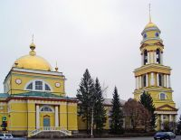
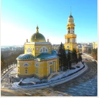

Христорождественский собор (Липецк)
Христорождественский кафедральный собор — православный храм, расположенный на центральной площади города Липецка — Соборной. Архитектор — Томазо Адамини.
Строительство храма было завершено в 1842 году. Собор построен по указу императрицы Екатерины Алексеевны, благословению Святейшего синода и преосвященного Иннокентия, епископа Воронежского.
Согласно традиционной точке зрения, строительство каменной соборной церкви Рождества Христова началось в 1791 году. Возведение храмовой части Христорождественского собора в основном было завершено к 1803 году, но освятить построенный храм удалось не сразу: произошёл пожар, во время которого сгорели все деревянные части собора, сильно пострадал и основной объём здания. К 1805 году соборная церковь была вновь открыта усердием многих благотворителей, а 20 июня 1805 года освящён первый престол нового храма — во имя святого Николая Чудотворца.
Главный соборный престол в честь Рождества Христова освятили 25 мая 1807 года. Именно с этого времени к Христорождественскому храму от Вознесенской церкви, который стоял на нынешней Театральной площади, переходит функция соборного храма Липецка. Третий престол в храмовой части (правый, в южном приделе) был освящён в 1816 году.
В 1822 году было принято решение о возведении соборной колокольни, спроектированной в строгом классическом стиле. Строительство её было начато в 1825 году, а завершено в 1835 году. В начале XX века на колокольне Христорождественского собора насчитывалось восемь колоколов. Самый крупный, весивший 489 пудов и отлитый в 1859 году, был перелит в 1900 году.
После сооружения колокольни наступил довольно длительный перерыв в строительстве собора. И только когда разные по высоте и массе объёмы колокольни и храмовой части стабилизировались, была начата постройка трапезной. Каменная трапезная была пристроена в 1840—1842 годах, руководил работами протоиерей Андрей Иванович Калугин. Два престола в трапезной церкви были освящены в честь Смоленской иконы Божией Матери Одигитрии в 1841 году (левый) и Воздвижения Животворящего Креста Господня в 1842 году (правый). Строительством трапезной и освящением престолов завершилось возведение главного соборного храма Липецка.
Изображения:


Христорождественский собор на карте:
|